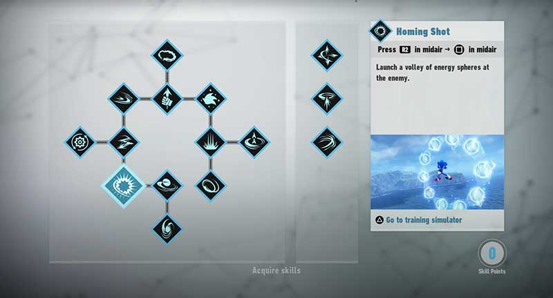

Sonic Frontiers is a 3D platformer and action-adventure game. As Sonic, the player explores the
Starfall
Islands (which consist of various biomes including flowery fields, forests, ancient ruins, and deserts) to
collect the Chaos Emeralds and investigate the islands' relationship to them. Sonic retains his
abilities from previous Sonic the Hedgehog games: he runs at high speeds, collects rings, grinds on
rails,
and homes in on enemies to attack.

The player can double jump, sidestep, drop dash, and boost if they have enough energy.[7] New abilities
include
combat attacks, running alongside walls, and using the Cyloop to create a circle of light around objects and
interact with them.[3][8] The Cyloop can perform different tasks by drawing certain shapes — for example,
drawing an infinity symbol or an 8 will allow Sonic to boost indefinitely for a short time.[9] Sonic also
gains
the ability to temporarily boost indefinitely upon collecting the maximum number of rings.[10] The player
can
customize the controls and adjust Sonic's speed, turning, acceleration and sensitivity, among other things.
As
they progress, they can also upgrade Sonic's speed, attack, defense and ring capacity.[7